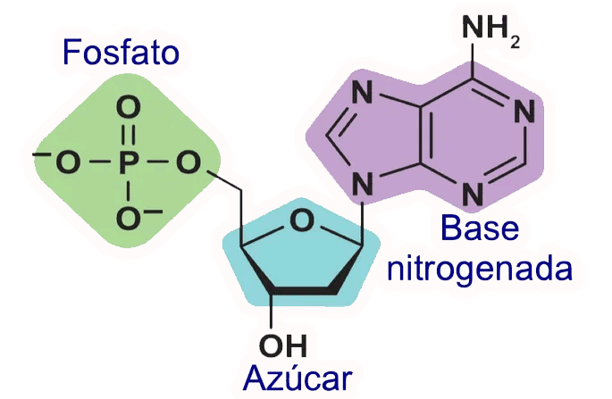
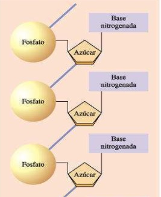

Genética
La Genética es la rama de la biología que estudia los mecanismos de herencia biológica, el ADN, el ARN, los genes y la evolución.
En esta sección vamos a repasar una parte del tema.
Nucleótidos
Los Nucleótidos son las estructuras moleculares con las que se construye el ADN y ARN. Son estructuras químicas orgánicas que contienen información genética e instrucciones para la síntesis de proteínas. Básicamente son los ladrillos o parte del rompecabezas con los que construimos el ADN y el ARN.
Y estos eslabones se van a unir uno a otros, formado una cadena.
Veamos un poco más en detalle las partes de los nucleótidos para entender un poco más. La parte del azúcar puede ser de 2 tipos:
- Ribosa
- Desoxirribosa
- InfoLibros